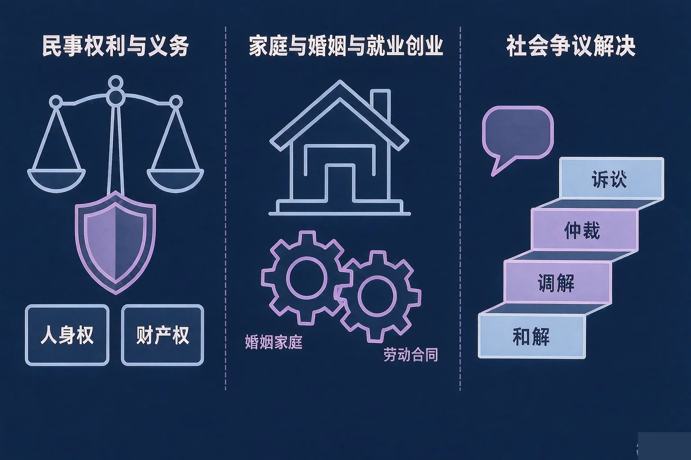
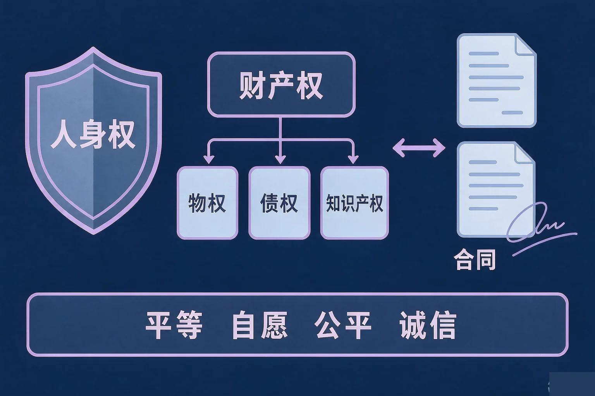
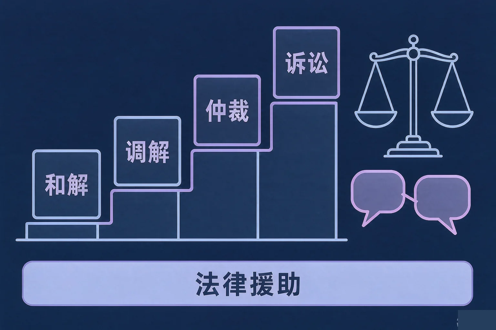

Gallery
v1.0.0 · skill v7.22.0
高中高三 · 法律与生活
生活里的这些事情在法律上归谁管，遇到纠纷该走哪条路？

选一个你真正想弄清的问题，后面的活动都会围着它转。
选择或输入后，这节课会围绕你的问题展开。
先凭直觉选一个，选完立刻看到解释——错了也没关系，正好知道要重点听哪里。
1. 某人未经同意把他人照片发到网上并配上不当文字。这主要侵害了：
肖像权、名誉权、隐私权等人身权利受法律保护，个人信息也受法律保护；未经同意公开他人照片并配不当文字，可能同时侵害多项人身权利。错因提醒：常见错误是把这件事误认为只是生活小节，或者搞混人身权与财产权——先看被影响的是「人本身的权利」还是「财产上的利益」。
2. 关于订立劳动合同，下面哪一句表述准确？
建立劳动关系应当订立书面劳动合同，这是《中华人民共和国劳动合同法》的明确要求；劳动合同应当依法订立，双方平等自愿、协商一致。错因提醒：容易误认为「口头说好也算数」——书面形式是法律对劳动关系的明确要求，也是日后维权的重要依据。
3. 关于解决纠纷的途径，下面哪一句表述准确？
解决纠纷有和解、调解、仲裁、诉讼等多种方式；仲裁依《中华人民共和国仲裁法》进行，实行一裁终局，裁决作出后，当事人就同一纠纷再申请仲裁或者向人民法院起诉的，不予受理。错因提醒：常见错误是把「打官司」误认为唯一的解决方式，或者把仲裁与诉讼搞混为可以随意交替使用。
为什么要先弄清这一件事？
我们每天都在发生各种民事交往：网上买东西、借东西、发照片、用别人的作品（And）；但真遇到麻烦时，我们往往说不清被影响的是哪一项权利、该找哪部法律（But）；所以这节课先把民事权利与义务这一段看清（Therefore）。
人身权
包括生命权、身体权、健康权、姓名权、肖像权、名誉权、荣誉权、隐私权等，个人信息受法律保护。它保护的是「人本身」。
财产权
包括物权、债权和知识产权。物权里有所有权、用益物权和担保物权；知识产权包括著作权、专利权、商标权等。

民事活动的基本原则与权利义务的统一
民事活动应当遵循平等、自愿、公平、诚信、绿色和公序良俗等原则；民事主体的人身权利、财产权利以及其他合法权益受法律保护，任何组织或者个人不得侵犯。同时，依法行使权利必须履行相应的义务，不得损害他人合法权益，不得违反法律、行政法规的强制性规定和公序良俗。
三个高频错误：一是误认为捡到的东西就成了自己的——拾得遗失物应当返还权利人，占有不等于所有；二是搞混人身权与财产权，看到「发照片」就只想到隐私，忽略了肖像权、名誉权可能同时被侵害；三是把《中华人民共和国民法典》误写成简称，法律名称必须写规范全称。
🔍 深层理解 换个角度再看一遍这件事，看看能不能说出背后的原理。
看见它：同一件小事可能同时碰到好几项权利：一张被擅自公开的照片，背后是肖像、名誉、隐私和个人信息的共同保护。
拆开它：判断一条生活情境的归属，先问三句：被影响的是人本身的权利，还是财产上的利益？是一次说好的事情没做到，还是家里人之间的抚养与赡养？
迁移它：「权利与义务是统一的」这句话在生活里到处能用：在群里转发别人的照片前先问一句「他同意了吗」，既保护别人，也保护自己。
先点一条生活情境，再判断它主要涉及哪一类法律归属。
先点上面一条生活情境。
为什么要弄清这两段？
我们已经知道民事权利的两大类别（And）；但说好的事情能不能不算数、家里的抚养和赡养是什么义务、打工要签什么、遇到纠纷该走哪条路（But）；所以这节课要把这四件事一起看清（Therefore）。

三个必须避开的错误：一是误认为劳动合同可以口头约定，建立劳动关系应当订立书面劳动合同；二是搞混调解与仲裁，调解由第三方主持促成合意，仲裁由仲裁委员会作出裁决；三是以为「调解过就不能再起诉」——调解未达成协议，当事人仍然可以依法通过其他途径解决。
🔍 深层理解 换个角度再看一遍这件事，看看能不能说出背后的原理。
看见它：同一件纠纷，可以走的门并不止一扇：自己商量、请人调解、申请仲裁、提起诉讼，各有各的适用情形。
比较它：和解靠合意，调解靠第三方主持，仲裁靠事先的仲裁协议和一裁终局，诉讼靠人民法院的裁判。先看清前提，再选路径。
迁移它：「说好的事情要算数」不只是道德要求：日常约定尽量留痕、写清楚，既是对别人的尊重，也是对自己的保护。
先点一条纠纷情形，再判断它更适合走哪一条解决途径。请特别留意当事人事先有没有仲裁协议。
先点上面一条纠纷情形。
情境：某校法治学习小组整理出五条表述，准备做成一期法治宣传专栏。请你当一次校对员，判断哪几条准确、哪几条必须改，并说明依据。
为什么表述三最容易写偏？
因为日常生活里很多约定确实是口头的，于是容易把生活经验直接套到劳动关系上。劳动关系有专门的法律要求，书面形式既是形式要求，也是日后主张权利的重要依据。
还有两处容易搞混：一是把仲裁与诉讼误认为可以随意交替使用；二是把《中华人民共和国民法典》写成简称——法律名称必须写规范全称，也不能凭空编造条文编号。
先凭直觉选一个，选完立刻看到解释——错了也没关系，正好知道要重点听哪里。
1. 某人拾得他人遗失的物品，失主找上门来要求返还。下面哪一句表述准确？
这属于财产权中的物权。所有权属于原权利人，拾得遗失物应当返还权利人，占有不等于所有。错因提醒：常见错误是把「我捡到的」直接误认为「这是我的」，把占有和所有搞混了。
2. 关于婚姻家庭关系，下面哪一句表述准确？
父母对未成年子女负有抚养、教育和保护的义务，成年子女对父母负有赡养、扶助和保护的义务；夫妻在婚姻家庭中地位平等。错因提醒：容易把赡养误认为只见于道德层面。它同时是法律规定的义务，不履行要承担相应法律责任。
3. 某劳动者被用人单位拖欠工资。下面哪一句表述准确？
劳动者依法享有取得劳动报酬、休息休假等权利；劳动争议可以依法通过协商、调解、仲裁、诉讼等途径解决。错因提醒：常见错误是把「打官司」误认为唯一的解决方式，或者误认为没有书面劳动合同就完全无法主张权利——建立劳动关系本就应当订立书面劳动合同，用人单位不签订本身就是问题。
先点一条情境，再判断它主要落在哪一个知识模块上。六条都归完类，你就得到了一张法律与生活知识地图。
先点上面一条情境。
把你的判断写下来：
从六条情境里挑一条你最有感触的，用自己的话写一写：它落在哪个模块、依据的是哪一项法律要求，为什么？
先凭直觉选一个，选完立刻看到解释——错了也没关系，正好知道要重点听哪里。
1. 某公司招聘时以性别为由拒绝录用符合条件的应聘者。这一做法：
劳动者依法享有平等就业和选择职业的权利；用人单位招用人员应当依法进行，不得实施就业歧视。错因提醒：常见错误是把就业歧视误认为属于企业的正常用人自主权。用人自主权必须在法律允许的范围内行使。
2. 甲乙双方事先在合同中约定，发生争议提交约定的仲裁委员会仲裁。后来双方发生争议，甲直接向人民法院起诉。准确的认识是：
仲裁需要当事人事先达成仲裁协议，依《中华人民共和国仲裁法》进行，实行一裁终局。错因提醒：容易把「仲裁与诉讼可以随意交替」搞混。事先有仲裁协议的，应当按约定申请仲裁。
3. 经营者在宣传中编造、传播虚假信息，损害竞争对手的商业信誉。这属于：
经营者应当遵守《中华人民共和国反不正当竞争法》，不得编造、传播虚假信息损害竞争对手的商业信誉；公平竞争是市场经济的基本要求。错因提醒：常见错误是把这类做法误认为只是「营销手段」。它属于法律禁止的不正当竞争行为，要承担相应法律责任。
一句口诀：人身财产两相护，权利义务不分离；合同成立须履行，违约就要担责任；婚姻平等育小责，成年赡养记心里；就业须签书面约，公平竞争守规矩；和解调解先商量，仲裁诉讼依法行。
给别人讲一遍：请用「民事权利」「合同」「依法维权」这三个词，给家里人讲清楚：生活里遇到麻烦，先看它属于哪一类法律问题，再选哪一条解决途径。
再动一动手：记一记你身边发生过的一件小事（消费、借用、网络言论都可以），写清它涉及哪一类权利或义务，依据的法律名称全称是什么。
三层练习，做完第一、二层就算通关；第三层留给愿意继续探索的同学。
⭐ 基础巩固（必做）
⭐⭐ 能力应用（必做）
⭐⭐⭐ 迁移挑战（选做）
左边是学它之前要先会的，右边是学会之后可以继续探索的，下面是同一领域的伙伴知识。
图谱正在加载：首次进入需下载知识索引（约 1–3 秒），加载完成后本行会自动消失。